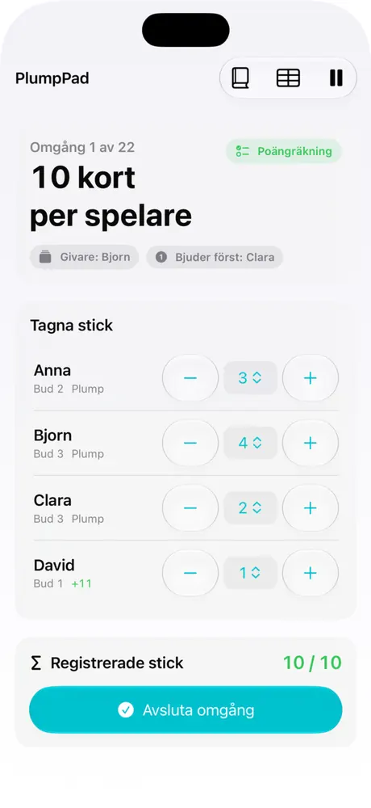
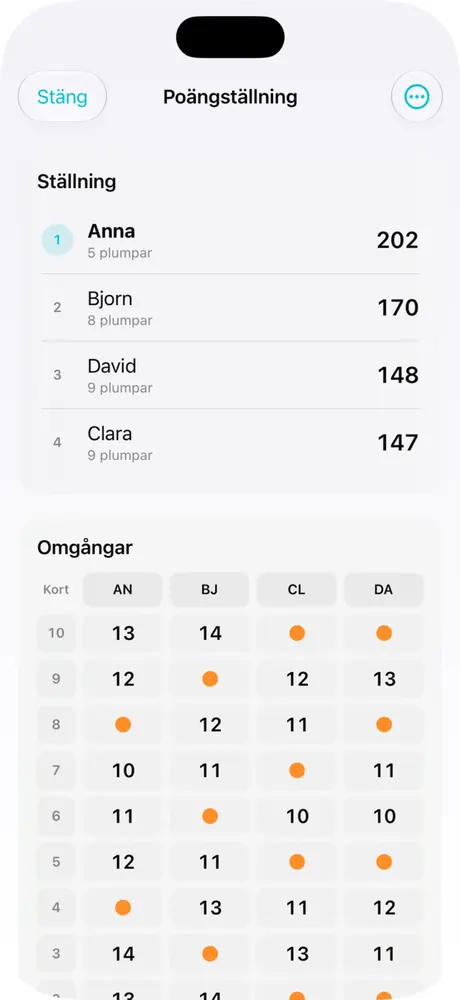

Budgivning i rätt ordning
Appen visar vem som delar, vem som bjuder och spärrar givarens otillåtna sista bud.
PlumpPad håller ordning på bud, stick och poäng – så att ni kan fokusera på korten och spelkvällen.
En tydlig poängräknare, inte ett digitalt kortspel. Ni spelar med riktiga kort, PlumpPad sköter protokollet.
Appen visar vem som delar, vem som bjuder och spärrar givarens otillåtna sista bud.
Registrera tagna stick och få poäng, plumpar och ställningen uppdaterad.
Pågående partier sparas på enheten så att ni kan fortsätta en annan gång.
Spara spelarnamn och välj dem inför nästa parti, eller skriv nya namn.
Bestäm om avslutade partier ska sparas och radera historiken när du vill.
Skriv ut ett PDF-protokoll på A4 eller Letter, eller exportera CSV via iOS.
Skärmbilder från den bifogade iPhone-versionen av PlumpPad.


